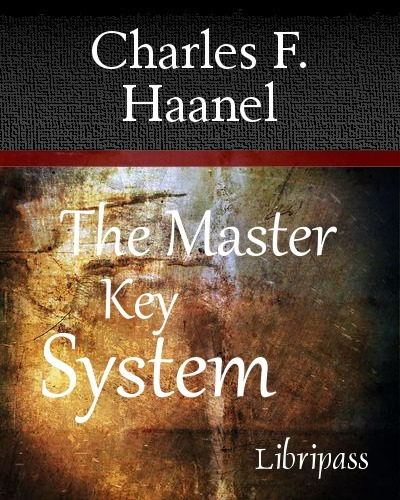

← Саентология
Как Хаббард украл Систему Главного Ключа
На этом сайте мы будем и дальше публиковать источники, идеи которых Хаббард украл для своей псевдо-религии.
Фактически, вся дианетика и саентология являются разношерстным плагиатом из разных источников, начиная с гипноза по Фрейду, и заканчивая фильмом “Звёздные Войны”.
В саентологии широко известны такие фразы как “Человек - духовное существо”, “Наибольшее благо для большинства”, “нет королевской дороги”, “быть идентифицированным как”.
Что не известно, так это то, что эти фразы были украдены Хаббардом из психологической методики начала 20 века, называемой “Система Главного Ключа” (Master Key System.)
Недавняя книга Рона Мискэвиджа, разоблачающая своего сына (который является руководителем Церкви Саентологии), также подтверждает эти данные.
Система Главного Ключа - это 24-недельный курс развития личности, проводимый в 1912 году Чарльзом Ханелом (Charles F. Haanel). В 1916 году он был опубликован в виде книги. По идеям этой книги был снят в 2006 году фильм Ронды Бирн “Секрет.”

Хаббард ни разу не упомянул эту систему как источник для своего вдохновения, хотя её методики являются непосредственной предтечей саентологических практик.
Содержание
Книга “Система Главного Ключа” 1916 года описывает закон привлечения (в саентологии это будет треугольник “Аффинити, Реальность, Общение”), творческую визуализацию (в саентологии - творческий процессинг), единство человека с Богом (целью саентологии формально является дать человеку сверхспособности). Книга учит о важности истины, гармоничного мышления, возможности концентрироваться (в саентологии необходимо “смотреть в лицо проблемам, объектам и пр.”).
Книга начинается таблицей, по которой вы можете определить свои текущие способности, умственные способности, здоровье. С похожего теста и таблиц начинается и путь в саентологии.
Дальнейшие главы книги состоят из теоретической части и следующих за ней упражнений, этот же приём использовал и Хаббард. Как и книга “Система Главного Ключа” труды саентологии уделяли большое внимание словарю и глоссарию.
Упражнения
Упражнения, которые приводит книга, заключаются в том, что человек должен комфортно сидеть на стуле с закрытыми глазами.
В саентологии такие упражнения называются ТУ (тренировочные упражнения, TR, training routines.)
Вот список глав книги, которые даже с первого взгляда поражают своей идентичностью саентологии (в скобках саентологические эквиваленты):
- Сидеть не двигаясь (ТУ, Тренировочные упражнения, TR)
- Снять все мысли от предыдущего упражнения (одитинг инцидентов)
- Высвобождение физического напряжения в сочетании с предыдущими упражнениями (дианетика - “очищение” тела)
- Выпустить все негативные эмоции в сочетании с предыдущими упражнениями (саентология как “очищение” духа)
- Творческая визуализация приятного места (творческий процессинг книги Хаббарда 1951 года)
- Вспомнить черты лица на фотографии кого-либо (творческий процессинг)
- Визуализация положительного выражения лица на лице партнера (ТУ)
- Визуализация всего, что приводит к построению броненосца (засекреченные уровни ОТ выше ОТ8)
- Визуализация цветка, вырастающего из семени (творческий процессинг)
- Визуализация определенных геометрических форм (творческий процессинг)
- Сосредоточение на цитате “все, чего ни будете просить, верьте, что получите” (общая реклама саентологии как универсального средства от всего)
- Созерцание ваше единства со всесильным (уровни ОТ, динамика 8)
- Созерцание себя как части целого (первые 7 динамик)
- Сосредоточение внимания на гармонии (динамики 9 - 16)
- Созерцание того, что знания должны быть применены, чтобы быть полезными (фактическая практика)
- Созерцание того, что счастье и гармония - состояния сознания (саентологический курс “Путь к счастью”)
- Фокусировка на объекте вашего желания (Ступени 0 - 4, работа с желаниями, ложными целями и установками)
- Сосредоточение внимания на ваших силах (уровни ОТ, особенно первоначальная версия)
- Общая концентрация на том, что вы хотите (Ступени 0 - 4)
- Сосредоточение внимания на цитате “В Нем мы живем и движемся и существуем” (работа с обладанием, процедуры L10, L11, L12)
- Сосредоточение внимания на истине (так называемый “Рандаун Истины”)
- Концентрация на цитате: “Говорите с ним, ибо он слышит, и дух может говорить с духом” (курс коммуникации Хаббарда)
- Созерцание факта, что человек есть дух с телом (“Саентология 0 - 8”)
- Понять, что этот мир - удивительный (общая реклама саентологов)
Хаббард, вероятно, предполагал, что с 1916 года до 1950 года прошло достаточно времени, чтобы никто не заметил плагиата.
Позже он запретил своим последователям как-либо сравнивать саентологию с другими учениями (чтобы избежать разоблачения.)
ЧИТАЕМ ДАЛЬШЕ:
Меня зовут Хаббард ...
Здравствуйте, меня зовут Рон Хаббард, и я алкоголик. А если честно … кто же он такой и что же такое саентология...
Сайт "Саентология Тома Круза"
 - Я вам деньги платил?
- Я вам деньги платил?- Платил.
- Вы меня одитировали?
- Одитировали.
- Где мои сверхспособности?
- Какие сверхспособности?
На этом сайте мы публикуем объективную информацию о культе саентологии - организованной псевдорелигиозной коммерческой структуре.
Сайт создаётся совместно с его читателями и будет собирать объективную информацию о культе саентологии и обо всём, что с ним связано.
Пишите в комментах Ваши предложения о том, что разместить в новых статьях!